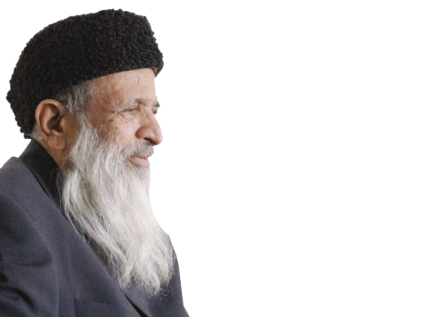

Home
About
Life in Images
Edhi Foundation
What we can Learn
Sitemap

ABUL SATTAR EDHI
" The richest poor man "
Life
Born: February 28, 1928, Bantva, India
Died: July 8, 2016, Karachi
Spouse: Bilquis Edhi (m. 1966–2016)
Buried: July 9, 2016, Karachi
Children: Faisal Edhi, Kubra Edhi, Kutub Edhi, Almas Edhi
Known for his humanitarian work, he quoted that :
" My religion is humanitarianism, which is the basis of every religion in the world ! "